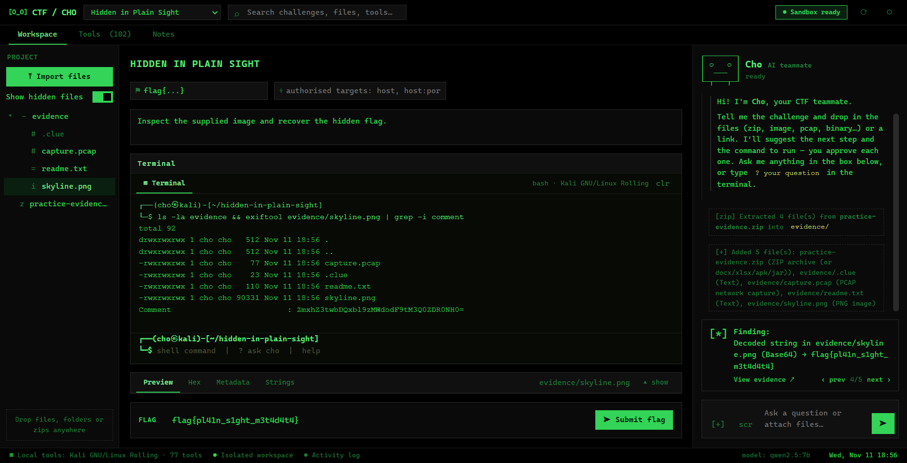

Cho is an open-source, terminal-style desktop app for Capture-the-Flag competitions and isolated practice labs. One shell, a 100+ tool catalogue, built-in artifact analysis, and an AI that runs entirely on your own machine.
Local-first · offline AI · controlled execution · MIT licensed

A real Kali/WSL, container, or PowerShell shell in the challenge folder. Run commands, or type ? your question to ask the AI — same prompt.
Cho runs on Ollama on your own hardware. It suggests the next step and the command — you approve each one. Nothing about your challenges leaves the machine.
Cho labels what it can prove from real output separately from what it guesses, so you always know what's a fact and what's a hypothesis.
File-type and metadata inspection, hidden-data detection, entropy, flag scanning, and chained auto-decoding — before you install a single tool.
A catalogue across crypto, forensics, stego, reversing, pwn and web — each with an example command and a one-line install. Mirrors the awesome-ctf stack.
Destructive commands blocked, network commands held for your approval, per-challenge authorised targets, and an optional no-network container sandbox.
git clone https://github.com/kevinmathew47/Cho.git cd Cho npm install npm start
From the app's Settings: one-click install Kali (WSL) and the tool stack, install Ollama and pull a model (e.g. qwen2.5:7b), or build the container image. None are required to start — the analysis, viewers and terminal work out of the box. Try it by dropping samples/practice-evidence.zip onto the window.